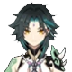

Informações de Combate
O seu principal Talento, chamado Vento Lemniscático, permite uma investida com sua lança que pode ser realizado duas vezes seguidas, além de permitir utilização no ar. O ataque inflige dano Anemo e pode atravessar vários inimigos ao mesmo tempo, causando dano em área.
| Talentos de Xiao | ||||||
|---|---|---|---|---|---|---|
|
 |
Ataque Normal Impulso do Redemoinho |
Habilidade Elemental Vento Lemniscático |
Supremo Dança Nuo da Conquista do Mal |
Passivo de 1ª Ascensão Conquistador do Mal - Domador de Demônios |
Passivo de 4ª Ascensão Dissolução de Eon - Queda do Céu |
Passivo Utilitário Transcensão - Transgressão Gravitacional |
Especificações
| Ícone | Nome | Tipo | Efeito |
|---|---|---|---|
| Flecha Oculta | Ataque Normal |
Ataque Normal
Realiza até 6 golpes rápidos.
|
|
| Vento Lemniscático | Habilidade Elemental |
Xiao avança, causando Dano Anemo aos inimigos em seu caminho.
|
|
| Dança Nuo da Conquista do Mal | Supremo |
Xiao veste a Máscara Yaksha, que há milênios, pôs deuses e demônios a tremer.
|
|
| Conquistador do Mal - Domador de Demônios | Talento Passivo de 1a Ascensão |
Enquanto estiver sob efeito da Dança Nuo da Conquista do Mal, todos os Danos causado por Xiao aumentam em 5%. O Dano aumenta por mais 5% a cada 3 segundos em que a habilidade persistir. O Bônus máximo de Dano é de 25%. |
|
| Dissolução de Eon - Queda do Céu | Talento Passivo de 4a Ascensão |
Ao liberar Vento Lemniscático, aumenta o Dano dos próximos usos em 15% por 7s. O efeito dura 7s e pode ser acumulado até 3 vezes. Ganhar um novo acúmulo atualiza a duração do efeito. |
|
| Transcensão - Transgressão Gravitacional | Talento Passivo Utilitário |
Diminui o consumo de Stamina ao Escalar de todos os personagens da equipe em 20%. Não acumulável com Talentos Passivos que concedem exatamente os mesmos efeitos. |